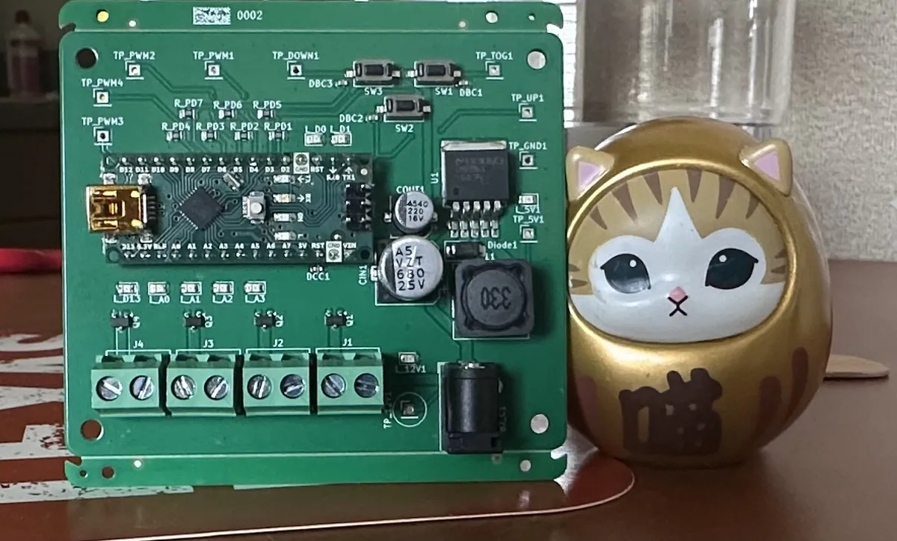
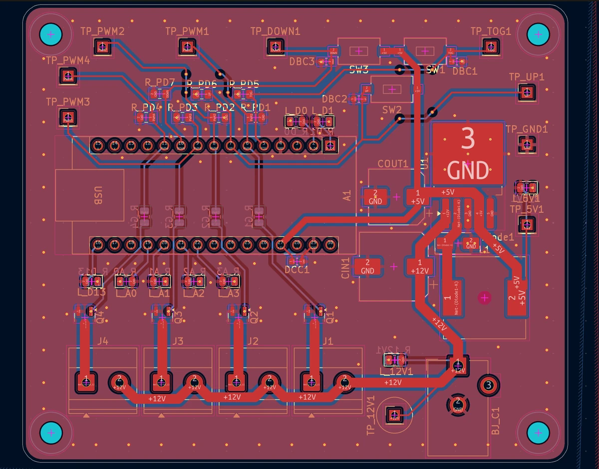
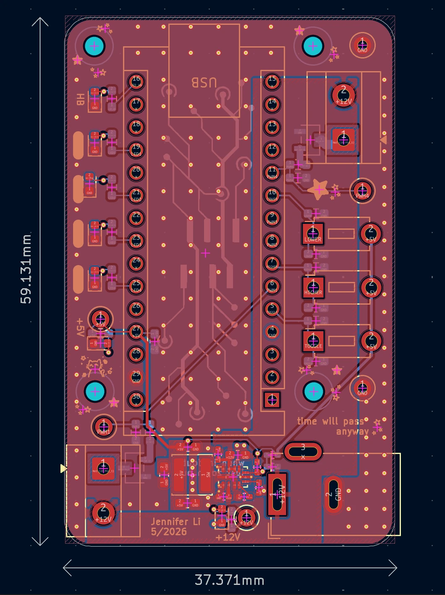

Personal project · 2025 – 2026
Arduino Interface Board
A 12V driver board for LED neon signs, with Arduino Nano–based toggling and dimming and an integrated 12V-to-5V buck.
- 2 layers · 1.6 mm
- KiCad
- Rev A built · Rev B designed
Rev A




Rev B
A cleaner redesign, not yet fabricated.


Features
- 12V input power architecture
- 12V→5V integrated buck converter
- Multi-channel nMOSFET LED control
- Arduino Nano–based LED toggling and dimming
- Optimized for compact and clean routing
- SMT/SMD and THT assembly
- Test points for GND, 12V, 5V, and PWM
- Indicator LEDs with blank silkscreen for post-production debugging
Design notes
The PCB was designed to be rectangular, optimizing balanced LED power distribution and component placement. Test points and button switches were placed along the sides for easier access in the debugging process.
For this design, I chose to have two LED output terminals after evaluating the maximum load requirement of the targeted LED strips. The strips I chose draw up to 5A, and thus my output circuits were designed to handle up to roughly 2.5A.
In addition, these two terminals were placed on opposite ends of the PCB's length to simplify high-current routing, reduce congestion, and distribute power evenly across the final neon sign product without unnecessary harnessing crossover. To accommodate this placement, I used a 12V pour on the top layer in an area with minimal top-layer GND pads and minimal top-layer routing. Thus, I could provide a clean, low-impedance power distribution between the input stage and the LED output terminal on the opposite end of the board.
PCB specifications
- Layers
- 2
- PCB thickness
- 1.6 mm
- Assembly
- SMT/SMD and THT
- Designed in
- KiCad
Future improvements
- Switch to addressable LED strips for firmware-controlled animation and color effects
- Transition to a fully integrated MCU system (ESP32) directly mounted on the PCB
- Use lower-profile connectors like Molex Nano-Fit instead of screw terminals
- Rework the user input interface, using more ergonomic controls like potentiometers, rotary encoders, or low-profile switches
- Add additional protection circuitry, including input fuses, TVS diodes, reverse-polarity protection, and overvoltage and undervoltage protection
- Implement per-channel current sensing and thermal monitoring
- Enable the buck converter's PG pin and add output sensing
Several of these carried into the next project, the Addressable LED Strip Controller.